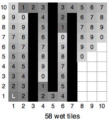
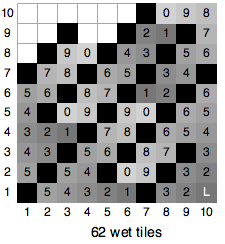
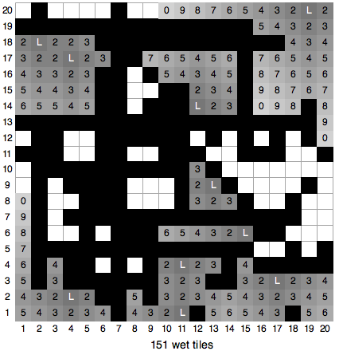
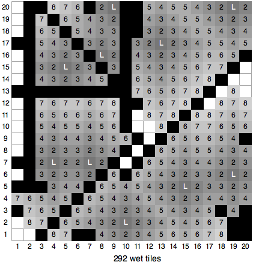
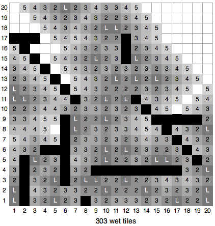
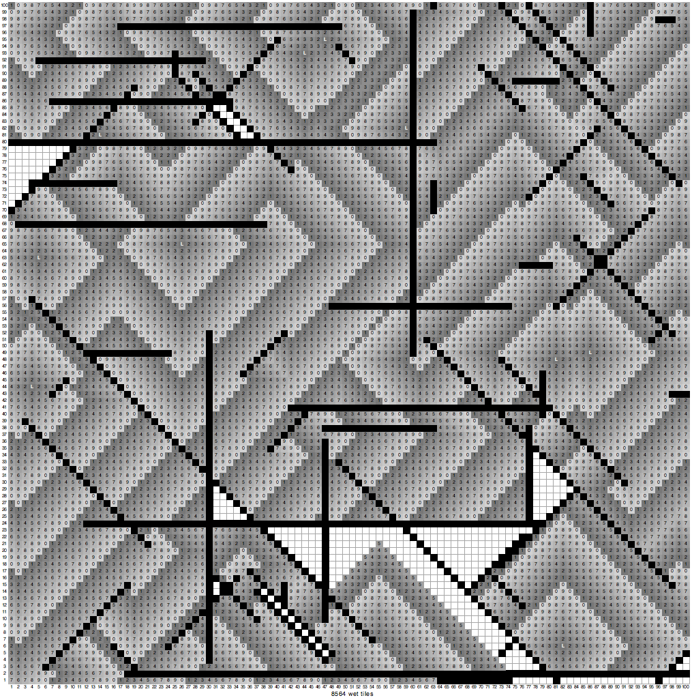

Judge's Notes for Wet Tiles
Graphics of judges' data:
The numbers shown are just the 1's digit of the time step.
Set 1-4 in problem statement.
Set 5

Set 6

Set 7 randomly generated

Set 8 randomly generated

Set 9 randomly generated

Set 10 randomly generated

Sets 11 -12: too big to show, but generated in the same pattern
as Sets 5 and 6, but with 100 walls alternating touching at either end
in a 1000 x 1000 grid, so the spreading water is mostly in one enormous
zig-zag.
The rest are also 1000 x 1000 - too big to show.
Set 13 one leak in the middle, time to fill 1000x1000.
Set 14: max everything: size, leaks, walls.
Set 15: big comb shape, filled from one source
Set 16: horizontal and vertical criss cross, much blocked
Set 17 one effectively zig-zag wall.